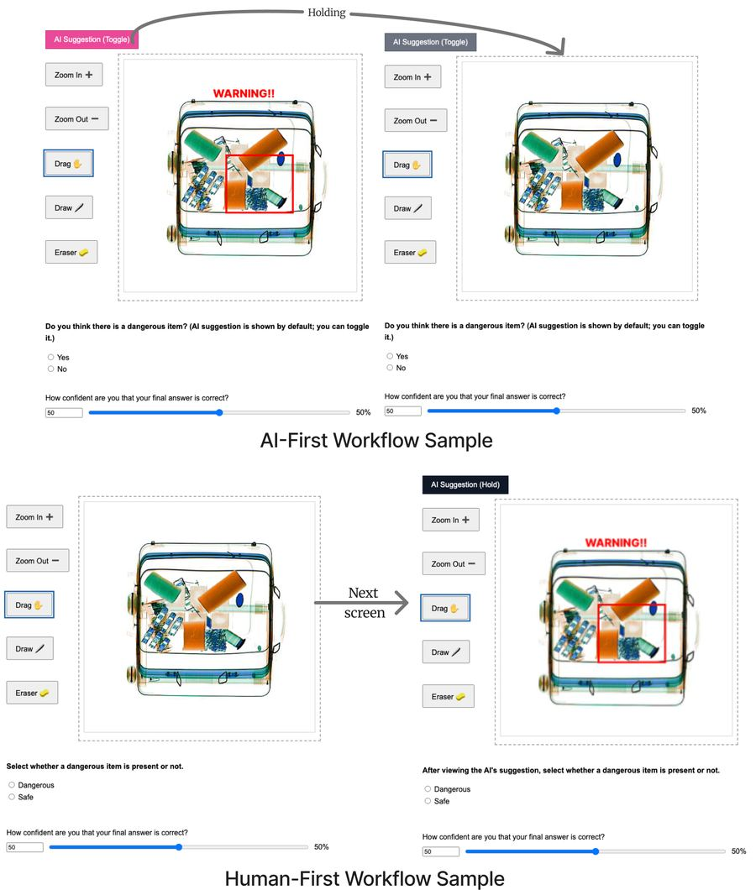

Who goes first matters: AI-first vs. human-first decisions
Every AI-assisted tool makes a design choice about when to show its recommendation. I ran a between-subjects experiment to see what that choice does to the mistakes people make.
The question
Should an AI show its recommendation first, or wait until the person commits to their own judgment? Most teams look only at overall accuracy.
What I did
A randomized study with 100 Prolific participants doing 24 AI-assisted X-ray screening decisions, with every click, zoom and AI toggle logged.
What I found
Same accuracy, different failures. AI-first users followed wrong AI flags 67% more often, while spending more time "verifying". The real choice is which error you can afford.
Context
Accuracy dashboards hide how AI changes people's mistakes
Content moderation, clinical decision support and security screening all pair a person with an AI recommendation. Automation bias, over-relying on that recommendation, comes in two forms that have very different costs:
- Commission errors: the AI raises a false alarm and the person follows it.
- Omission errors: the AI misses a real problem and the person misses it too.
Prior work mostly reports whether a workflow raises or lowers overall accuracy. I wanted to know how workflow order changes the mix of errors and the behavior behind them, because that's what a product team actually needs to choose a design.
Stages 1–2 · Planning and research · Study design
Same images, same AI, only the order changes
I chose X-ray baggage screening because it is a standard paradigm in automation-bias research where right and wrong are unambiguous. That made it possible to plant exactly as many chances for each error type as I needed.
- Design
- 2 workflow (between) × 2 AI correctness × 2 difficulty (within)
- Participants
- N = 100 on Prolific, randomized 50 / 50, desktop only, IRB approved
- AI-first
- Image and AI label shown together; users can hide the AI, then submit once
- Human-first
- Users submit an unaided call, then see the AI and may revise
- Trials
- 24 per person: 12 AI-correct, 6 planted false alarms, 6 planted misses
- Logged
- Verification time, zoom / drag / draw use, AI toggles, AI-visible time, 0 to 100 confidence
- Analysis
- Welch's t-tests with Wilcoxon checks; mixed-effects logistic regression in R (lme4)
- Calibration
- Brier score from confidence vs. correctness, plus a non-overlapping-trials sensitivity check

Stage 1 · Planning · Hypotheses
What I expected, and what happened
I set four hypotheses from prior automation-bias research before collecting data. Three didn't hold, which is what made the result useful to a design team.
| # | Hypothesis | Result | What the data showed |
|---|---|---|---|
| H1a | AI-first causes more commission and omission errors | Partly | Commission only |
| H1b | Human-first gives higher accuracy | Not supported | Equal overall, with a crossover by AI correctness |
| H2 | Human-first users verify more | Not supported | The opposite: AI-first verified more |
| H3 | Calibration changes the workflow effect | Not supported | Better calibration helped in both workflows |
Stage 3 · Synthesis · Findings
Order didn't change how often people were right. It changed how they were wrong.
Accuracy crosses over with AI correctness
The gap is commission errors
1. Showing AI first trades one risk for another
When the AI was right, AI-first users were more accurate. When it was wrong, they were less accurate. Aggregate accuracy averaged these out to a tie, which is exactly why an accuracy-only dashboard would call the two designs equal.
"The AI tool made me unsure of my decisions... that made me more unsure even when I was pretty sure it was safe."AI-first participant
2. More verification did not mean more independent judgment
AI-first users spent 19.4 s verifying per trial vs. 10.5 s, and switched tools almost twice as often (2.8 vs. 1.5), yet made more commission errors. The AI label stayed on screen for 93% of their trial time vs. 10%. They were checking where the AI pointed. Effort metrics alone would have rated this the more careful workflow.
"I always zoomed on the area that the AI was suggesting, and then dragged around looking for things."AI-first participant
3. Deciding first helps, but the revision step leaks
In the human-first workflow, correct AI advice fixed 41% of wrong initial calls (75 of 181). Wrong AI advice also flipped 13% of correct calls (57 of 423), mostly when people felt unsure. Human-first used the AI as a second opinion, consulting it more often but briefly.
"If the answer was obvious, I did not even count what AI said. If I wasn't sure, I checked if my observation was the same as AI's."Human-first participant
4. Calibrated people resisted bias in both workflows
People whose confidence tracked their accuracy made fewer automation-bias errors under either design, with no evidence that calibration changed the workflow effect (interaction OR = 1.05, 95% CI 0.48 to 2.29). Calibration support is a lever that works alongside workflow choice.
"I felt uncertain when the AI's suggestion differed from my initial decision, which prompted me to re-examine the image."Human-first participant
Outcome · Design guidance
What I'd tell a team shipping an AI-assisted review tool
Choose the order by the cost of each error
If false alarms are expensive to act on, delay the AI. If the model is highly reliable and misses are the bigger risk, showing it first can help. Track commission and omission separately.
Use staged disclosure
Ask for a quick initial call, or reveal AI detail progressively, so people form a view before the recommendation frames what they look at.
Add friction where revisions go wrong
When someone is about to switch from their own answer to the AI's, highlight the disagreement or ask for a one-line reason.
Don't use time-on-task as a trust metric
Long inspection under constant AI exposure looked diligent and produced more bias. Measure where attention goes, not only how long it lasts.
Reflection
Two hypotheses failed, and that was the finding
Worked
- Planting equal false alarms and misses let me separate the two error types cleanly.
- Interaction logs explained the "why" that outcome data couldn't.
- Open-ended responses gave the team quotable mechanisms.
Limits
- Simulated AI and a lab task; real screeners have training and time pressure.
- Crowd workers, not domain experts.
- Open-ended responses illustrate patterns but weren't formally coded.
Next time
- Pre-register hypotheses and a power analysis.
- Test staged disclosure and revision friction as conditions.
- Run with domain experts in a realistic tool.